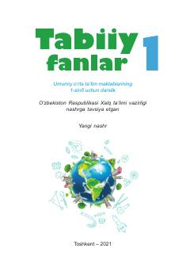

TF1-sinf o‘quvchilari uchun tabiat va atrof-muhit haqidagi asosiy darslik.
Ushbu darslik umumiy o‘rta ta’lim maktablarining 1-sinf o‘quvchilari uchun mo‘ljallangan bo‘lib, atrof-muhit, o‘simliklar, hayvonlar va tabiat hodisalari haqidagi boshlang‘ich bilimlarni qamrab oladi. Kitobda kuzatish, o‘lchash va tadqiqot o‘tkazish kabi amaliy ko‘nikmalarni rivojlantirishga alohida e’tibor qaratilgan.